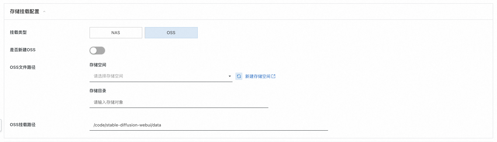

PAI+NAS搭建AIGC绘画应用部署文档
背景说明
阿里云计算巢提供了Stable Diffusion快速部署及下载自定义模型功能，使用者不需要自己下载代码，不需要自己安装复杂的依赖，不需要了解Git、Python、Docker等技术，只需要在控制台图形界面点击几下鼠标就可以快速启动Stable Diffusion服务进行绘画，非技术同学也能轻松搞定。 前文Stable Diffusion集群版--计算巢私有化部署方案介绍了如何在计算巢基于ECS快速创建Stable Diffusion，本文基于阿里云机器学习平台（PAI）快速部署Stable Diffusion，底层可自由选择NAS或OSS存储生成的图片。
架构说明
- 通过计算巢一键创建服务和应用，简化vpc/vswitch/pai/nas/oss创建过程，通过编排控制资源的拉起顺序，完成资源和软件一键部署；
- Stable Diffusion可选择单机版、集群版，提供公网URL给到用户访问；
- 部署前可自由选择挂载NAS、OSS，同时支持选择新建/已有挂载设备，方便用户自由选择存储产品；
- 部署前可自由选择填入已有/新建VPC。
方案实践
- 登录阿里云计算巢控制台，进入 PAI+NAS搭建企业级AIGC绘画应用 服务实例创建页面，填写相关参数，填写完成点击确认订单(确保账号有余额)。
存储挂载配置，可选择使用NAS或OSS，两者二选其一，其中每种存储可以选择是否新建。 若选择NAS且选择新建，则无需填写其他参数，默认即可：
若选择NAS且选择不新建，则需要选择文件系统与挂载点：
若选择OSS且选择新建，则无需填写其他参数，默认即可：
若选择OSS且选择不新建，则需要填写OSS的文件路径：

选择可用区、VPC、交换机等内容，若需新建则走默认即可：
- 参数说明
| 参数组 | 参数项 | 示例 | 说明 |
|---|---|---|---|
| 服务实例名称 | N/A | test | 实例的名称 |
| 地域 | N/A | 华东1（杭州） | 选中服务实例的地域，建议就近选中，以获取更好的网络延时。 |
| PAI配置 | 类型 | 标准版 | 可选标准版、集群版 |
| PAI配置 | 运行命令 | ./webei …… | 标准版与集群版命令不同，默认即可 |
| PAI配置 | 实例数 | 1 | 实例数量 |
| PAI配置 | 资源组种类 | 公共资源组 | 可选公共资源组与自定义的资源组 |
| PAI配置 | 实例规格 | ml.gu7i.c16m60.1-gu30 | 资源组种类为公共资源组时选择 |
| PAI配置 | CPU | 1 | 资源组种类为非公共资源组时选择 |
| PAI配置 | Memory | 30000 | 资源组种类为非公共资源组时选择 |
| PAI配置 | GPU | 8 | 资源组种类为非公共资源组时选择 |
| 存储挂载配置 | 挂载类型 | NAS | 选择NAS或OSS |
| 存储挂载配置 | 是否新建NAS | 是 | 选择NAS时选择 |
| 存储挂载配置 | NAS源路径 | / | 选择NAS时选择 |
| 存储挂载配置 | NAS挂载路径 | /code/stable-diffusion-webui/data | 选择NAS时选择 |
| 存储挂载配置 | 文件系统 | xxx | 选择NAS且不新建NAS时选择 |
| 存储挂载配置 | NAS挂载点 | xxx | 选择NAS且不新建NAS时选择 |
| 存储挂载配置 | 是否新建OSS | 是 | 选择OSS时选择 |
| 存储挂载配置 | OSS挂载路径 | /code/stable-diffusion-webui/data | 选择OSS时选择 |
| 存储挂载配置 | 文件路径 | xxx | 选择OSS且不新建OSS时选择 |
| 可用区配置 | 可用区 | 可用区I | 不同地域可用区不同 |
| VPC设置 | 是否新建VPC | 是 | 若是，计算巢将自动创建VPC和Vswitch，若否，则需要填入已经创建好的VPC和Vswitch |
| VPC设置 | 专有网络VPC实例ID | vpc-xxx | 按实际情况，选择专有网络的ID。 |
| VPC设置 | 交换机实例ID | vsw-xxx | 按实际情况，选择交换机ID。若找不到交换机, 可尝试切换地域和可用区。 |
- 确认参数后，勾选我已阅读并同意《计算巢服务协议》，点击"立即创建"按钮，本示例以新建NAS与VPC为例：
- 查看部署进度。 点击列表页查看，可以看到刚刚创建的服务实例以及服务部署进度。
- 访问stable-diffusion 等待状态变为"已部署"后，点击详情，进入对应的服务实例后，可以在页面上点击以访问。
进入服务实例详情页：
点击Endpoint，即可进入下方页面，开始绘画！
其他功能
模型下载/插件下载/RDS相关功能 参考单机版功能相同不重复复制了如何在阿里云快速启动Stable Diffusion轻松玩转AI绘画_AIGC_实战派_阿里云帮助中心。
总结
本文介绍了通过PAI创建绘画应用Stable Diffusion的详细功能实践，计算巢在私有化部署(cloud op）场景下提供一键部署、高效运维、弹性伸缩等功能，提供详细的报价信息、资源分组、分账展示等功能，方便客户在解决方案类场景下快速部署落地。
© 2009-2022 Aliyun.com 版权所有